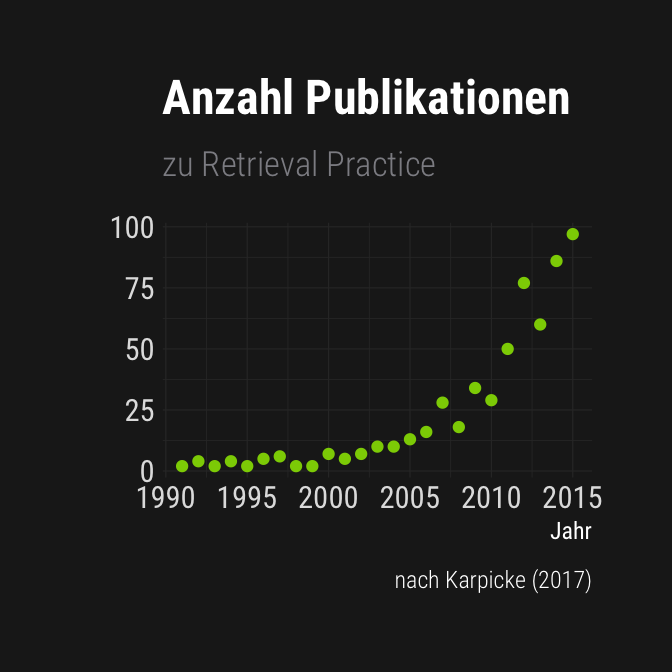

Leveraging Retrieval Practice
im Kontext einer Methodeneinführung für Lehramtsstudierende
Testing Effect
[…] retrieval practice […] can more effectively consolidate long-term retention of studied information […] and facilitate mastery of new information […] by comparison with other strategies […]. This phenomenon is termed the testing effect […] (Yang et al., 2021).

Testing Effect
[…] retrieval practice […] can more effectively consolidate long-term retention of studied information […] and facilitate mastery of new information […] by comparison with other strategies […]. This phenomenon is termed the testing effect […] (Yang et al., 2021).

Ergebnisse

Literatur

Bjork, E. L., Little, J. L., & Storm, B. C. (2014). Multiple-choice testing as a desirable difficulty in the classroom. Journal of Applied Research in Memory and Cognition, 3, 165–170.
Butler, A. C., & Roediger, H. L. (2007). Testing improves long-term retention in a simulated classroom setting. European Journal of Cognitive Psychology, 19(4-5), 514–527.
Carpenter, S. K., & Delosh, E. L. (2006). Impoverished cue support enhances subsequent retention: Support for the elaborative retrieval explanation of the testing effect. Memory & Cognition, 34(2), 268–276.
Chan, J. C. K., Meissner, C. A., & Davis, S. D. (2018). Retrieval potentiates new learning: A theoretical and meta-analytic review. Psychological Bulletin, 144, 1111–1146.
Dunlosky, J., Rawson, K. A., Marsh, E. J., Nathan, M. J., & Willingham, D. T. (2013). Improving Students’ Learning With Effective Learning Techniques: Promising Directions From Cognitive and Educational Psychology. Psychological Science in the Public Interest, 14(1), 4–58.
Glover, J. A. (1989). The "testing" phenomenon: Not gone but nearly forgotten. Journal of Educational Psychology, 81, 392–399.
Hinze, S. R., & Wiley, J. (2011). Testing the limits of testing effects using completion tests. Memory, 19(3), 290–304.
Karpicke, J. D. (2017). Retrieval-Based Learning: A Decade of Progress. In Learning and Memory: A Comprehensive Reference (pp. 487–514). Elsevier.
Karpicke, J. D., Butler, A. C., & Roediger III, H. L. (2009). Metacognitive strategies in student learning: Do students practise retrieval when they study on their own? Memory, 17(4), 471–479.
Karpicke, J. D., & Smith, M. A. (2012). Separate mnemonic effects of retrieval practice and elaborative encoding. Journal of Memory and Language, 67(1), 17–29.
Kirk-Johnson, A., Galla, B. M., & Fraundorf, S. H. (2019). Perceiving effort as poor learning: The misinterpreted-effort hypothesis of how experienced effort and perceived learning relate to study strategy choice. Cognitive Psychology, 115, 101237.
Kornell, N., & Bjork, R. A. (2007). The promise and perils of self-regulated study. Psychonomic Bulletin & Review, 14(2), 219–224.
Lechuga, M. T., Ortega-Tudela, J. M., & Gómez-Ariza, C. J. (2015). Further evidence that concept mapping is not better than repeated retrieval as a tool for learning from texts. Learning and Instruction, 40, 61–68.
Lipowski, S. L., Pyc, M. A., Dunlosky, J., & Rawson, K. A. (2014). Establishing and explaining the testing effect in free recall for young children. Developmental Psychology, 50, 994–1000.
McDaniel, M. A., Anderson, J. L., Derbish, M. H., & Morrisette, N. (2007). Testing the testing effect in the classroom. European Journal of Cognitive Psychology, 19(4-5), 494–513.
Pastötter, B., & Bäuml, K.-H. (2014). Retrieval practice enhances new learning: The forward effect of testing. Frontiers in Psychology, 5.
Roediger, H. L., & Karpicke, J. D. (2006). Test-Enhanced Learning: Taking Memory Tests Improves Long-Term Retention. Psychological Science, 17(3), 249–255.
Rummer, R., Schweppe, J., Gerst, K., & Wagner, S. (2017). Is testing a more effective learning strategy than note-taking? Journal of Experimental Psychology: Applied, 23, 293–300.
Steenhuis, H.-J., Grinder, B., & De Bruijn, E. J. (2009). The use(lessness) of online quizzes for achieving student learning. International Journal of Information and Operations Management Education, 3(2), 119–148.
Yang, C., Luo, L., Vadillo, M. A., Yu, R., & Shanks, D. R. (2021). Testing (quizzing) boosts classroom learning: A systematic and meta-analytic review. Psychological Bulletin, 147(4), 399–435.
Yang, C., Potts, R., & Shanks, D. R. (2018). Enhancing learning and retrieval of new information: A review of the forward testing effect. Npj Science of Learning, 3(1), 8.